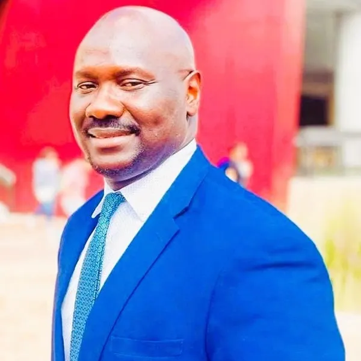

Co-Founder and Managing Partner
Andrew Ojede, Ph.D.

Professor Ojede is a Co-Founder and Managing Partner at Lithicon R&D Labs. He oversees the general operations of the company by setting short-, medium-, and long-term goals, and ensuring that the company's deliverables are accomplished.
With over 14 years of experience as a university professor and international scholar studying sources of growth financing for developing countries, Dr. Ojede brings significant knowledge of the economies of developing regions.
He earned his doctoral degree in economics from Kansas State University and consults with international organizations, including the World Bank and the United Nations.